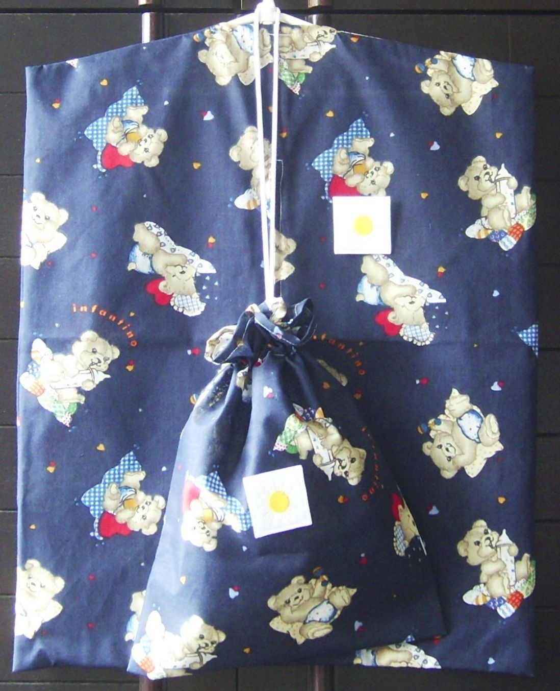
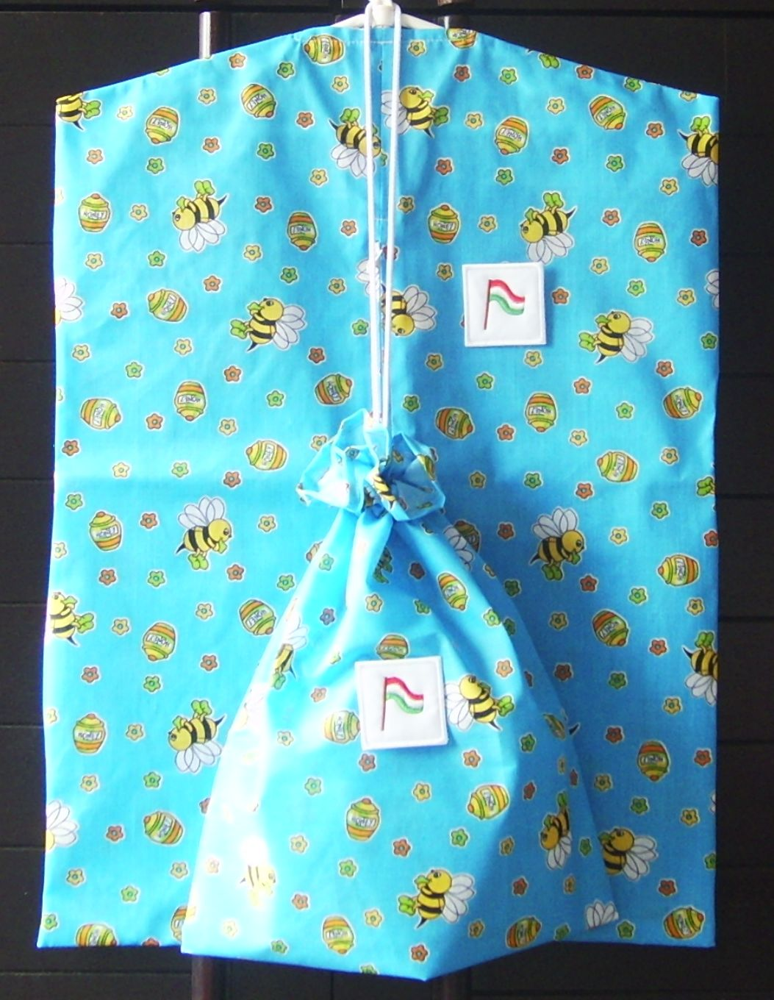
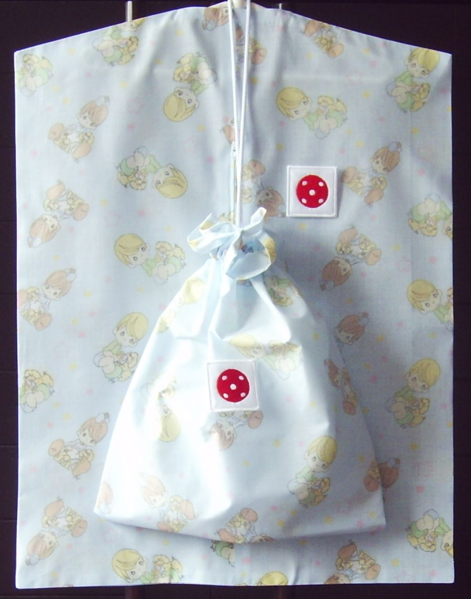
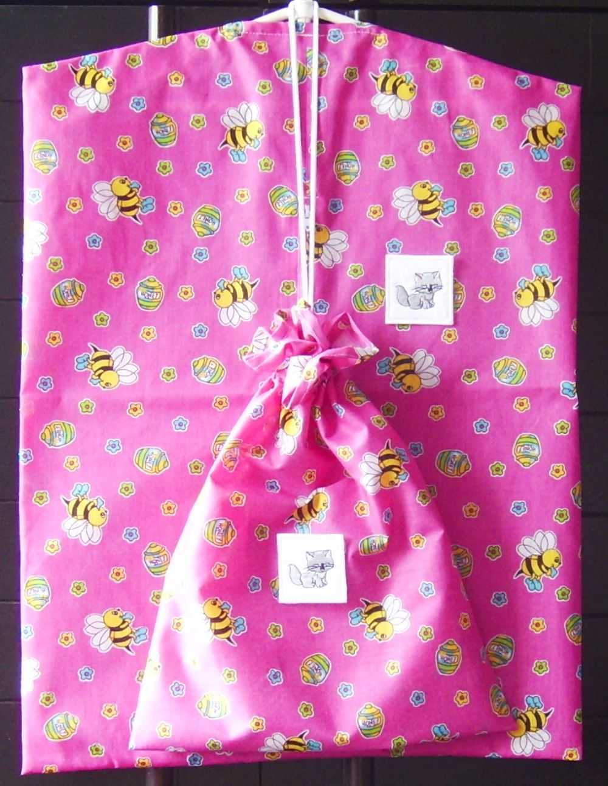
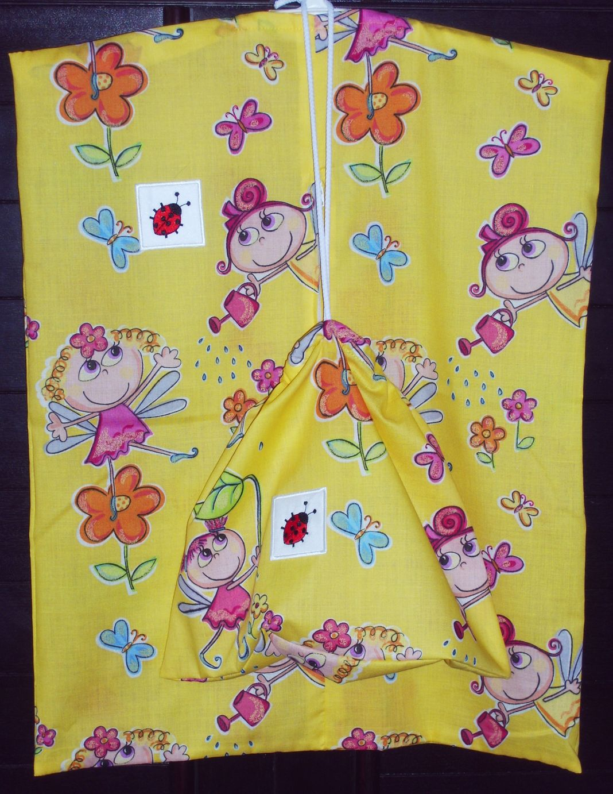

Az óvodai hétköznapok fontos kellékei: hímzett jellel ellátott RUHATARTÓ ZSÁK és TORNAZSÁK garnitúrák





TÜNDÉRES
A zsákok anyaga pamut-poliészter kevertszálas vászon. Mosható 40 fokon, vasalható közepes fokozaton. A ruhatartó zsákok mérete kb.45 x 57 cm, elöl egy mûanyag zipzárral nyithatók. A tornazsákok mérete kb. 35 x 25 cm, fehér zsinórral húzhatók össze.
Vissza a nyitólapra